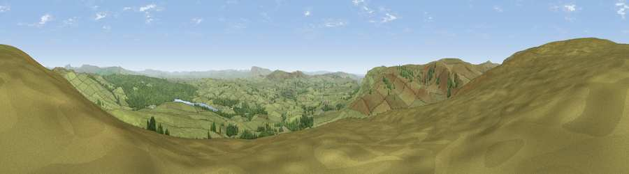

Viewpoint near Slaidburn
#7172 in England · top 16% of its area beats it · near SlaidburnWhere it is
The exact computed spot (SD 70000 56662). Click the marker for map links.
The view, rendered

A 360° render of this exact spot computed from the terrain model, tree cover and land cover — summer colours, afternoon light, calibrated against photographs of famous viewpoints. Real trees, hedges and buildings will differ in detail.
The panorama
Grey silhouette: terrain skyline in each direction (720 bearings, Earth curvature and refraction included). Dashed green: skyline with trees (+15 m) and buildings (+8 m) as obstacles. Blue strip: how far the ground is visible on each bearing.
Where the view opens
Wedge length = distance to the farthest visible ground on that bearing (vegetation-aware). Rings at 10, 25 and 50 km.
What fills the view
85% grassland · 14% woodland ·
Angular shares of the visible panorama (visual magnitude), not map area. Landscape diversity 0.20 (0–1 Shannon).
Key numbers
More beautiful places nearby
The staircase of upgrades: each row has a higher view potential than everything closer. Driving times are estimates from straight-line distance, calibrated against real road routing — check an actual route before setting out.
| Place | Direction | Drive | Score |
|---|---|---|---|
| Viewpoint near Slaidburn | NNW · 1 km | ~3 min | 70.4 |
| Viewpoint c9171_7367 | NW · 3 km | ~6 min | 72.1 |
| Viewpoint c9175_7348 | NW · 3 km | ~8 min | 72.9 |
| Hailshowers Fell | N · 4 km | ~10 min | 73.8 |
| Viewpoint c9157_7266 | W · 7 km | ~14 min | 75.6 |
| Whins Brow | WSW · 7 km | ~15 min | 76.3 |
| Viewpoint c9170_7172 | W · 12 km | ~22 min | 77.0 |
| Grit Fell | W · 15 km | ~26 min | 77.3 |
54.00511, -2.45920 · source: screening · position refined by local search. Computed location — check access rights before visiting.